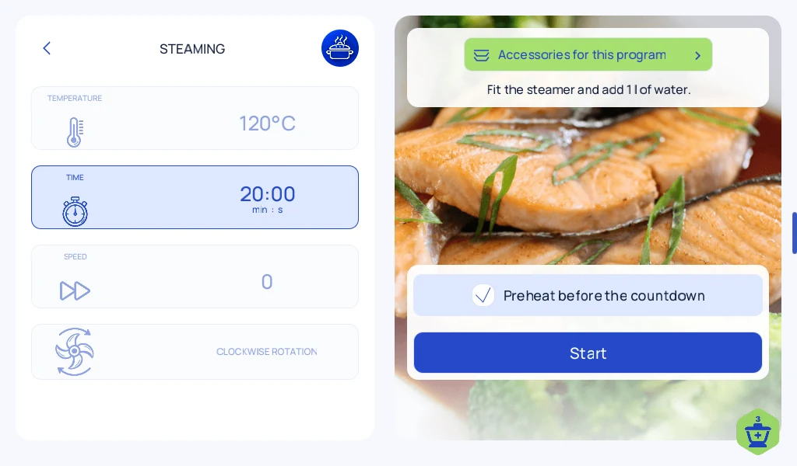

The project started with a stained notebook full of handwritten family recipes. The first assistant read a photo of the page and let you correct any unclear text. It then converted measures such as a handful of nuts to quantities you could weigh, organised the instructions and chose the right programmes for Monsieur Cuisine.

The next goal was to open the adapted recipe on the robot. After the first attempts and interrupted connections, the Connect could start with a choice between its factory application and Lidlomix Pro.

A recipe prepared in ChatGPT could be saved as JSON, sent from a phone over Wi-Fi and reviewed on the Connect. The robot then displayed what to add and when to weigh it, along with the settings for supported cooking steps.

The temperature and speed controls moved to a horizontal layout. Minutes and seconds gained separate columns. Quick tools could be opened during a recipe and return you to the step you were on.

The Start button stayed visible while you edited settings. Pause and resume were improved, Turbo and deep cleaning were redesigned, and the sound controls gained a preview.

WunderPeeler gained a dedicated programme with weighing and illustrated fitting instructions. The recipe catalogues were separated, and the Connect gained online updates with a download progress indicator.